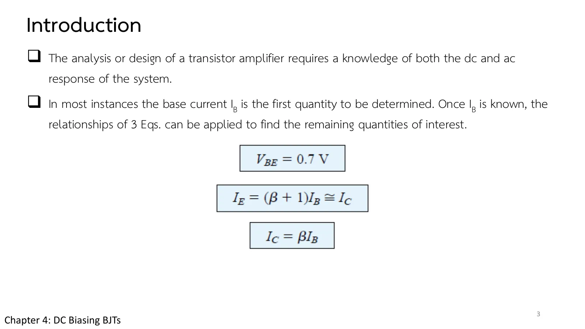
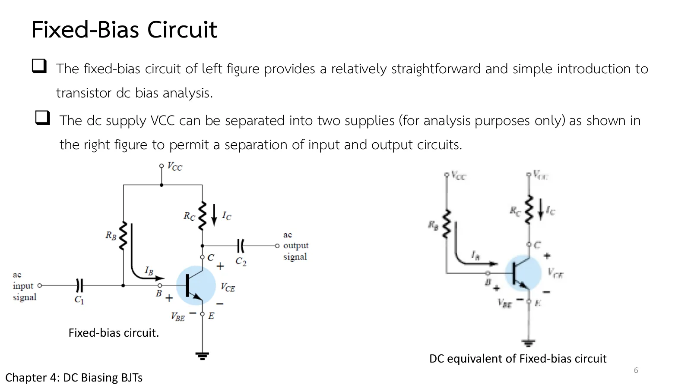
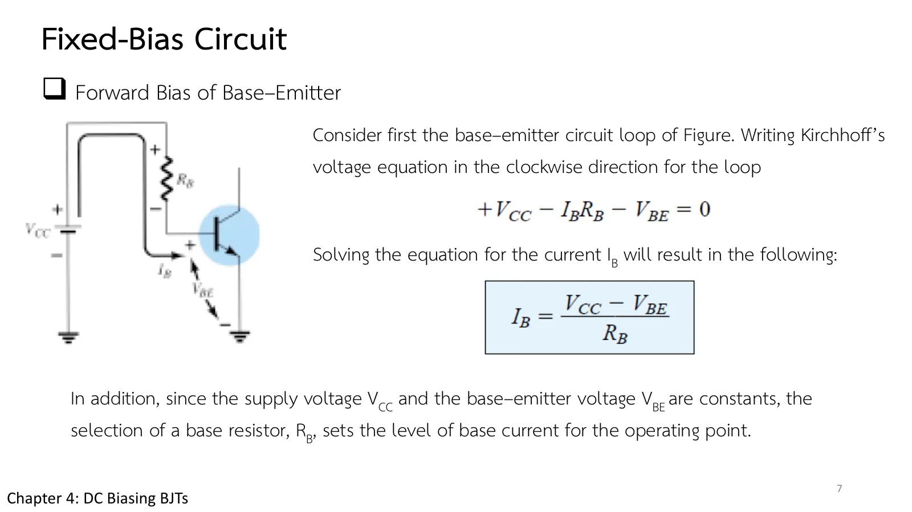
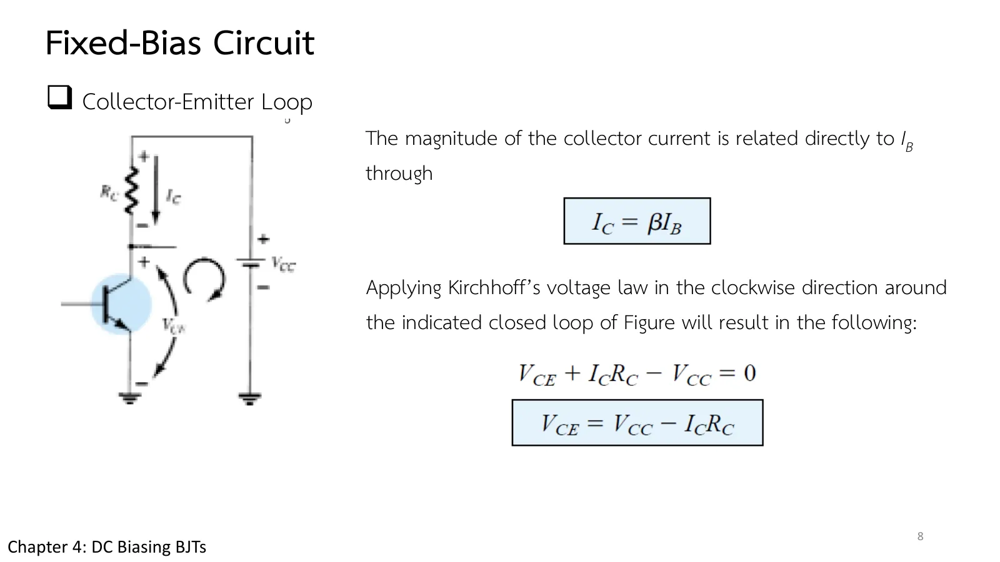
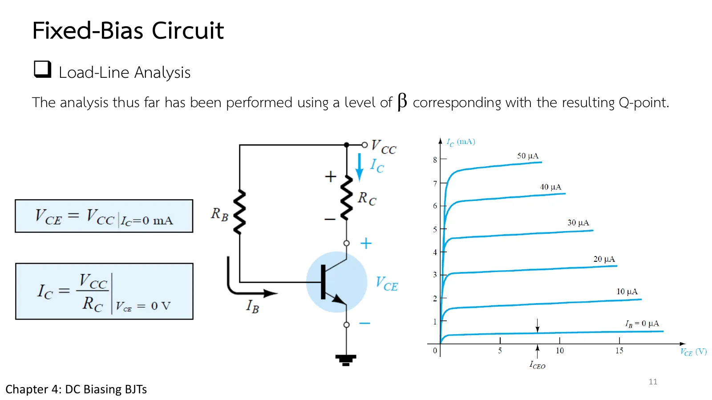
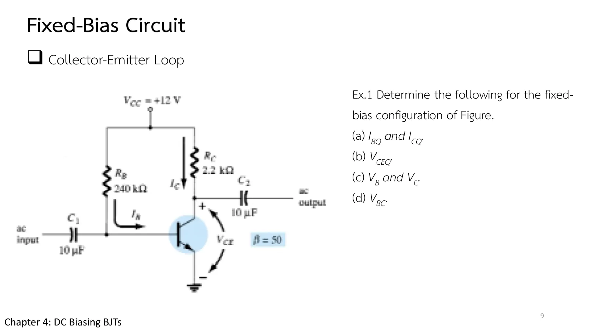
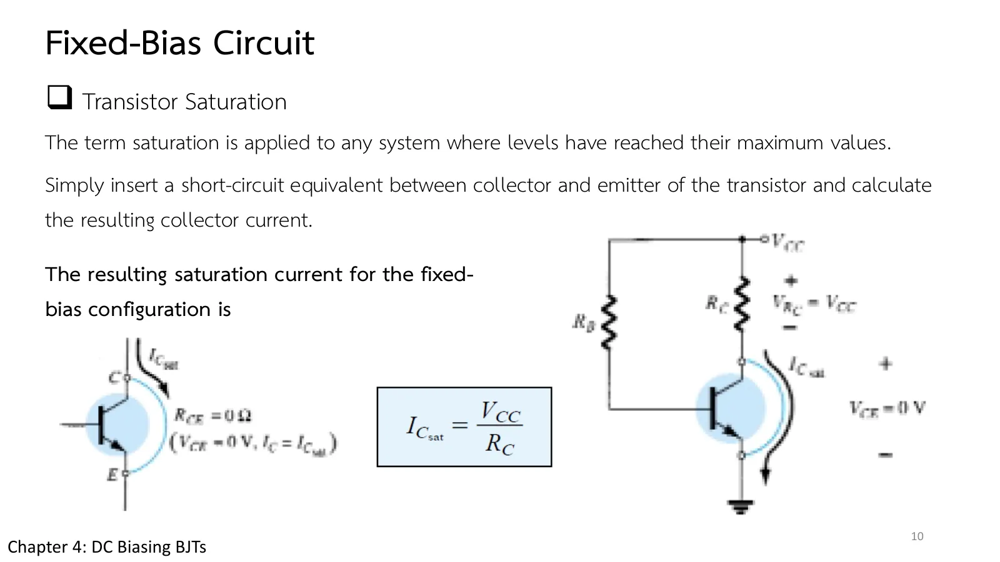
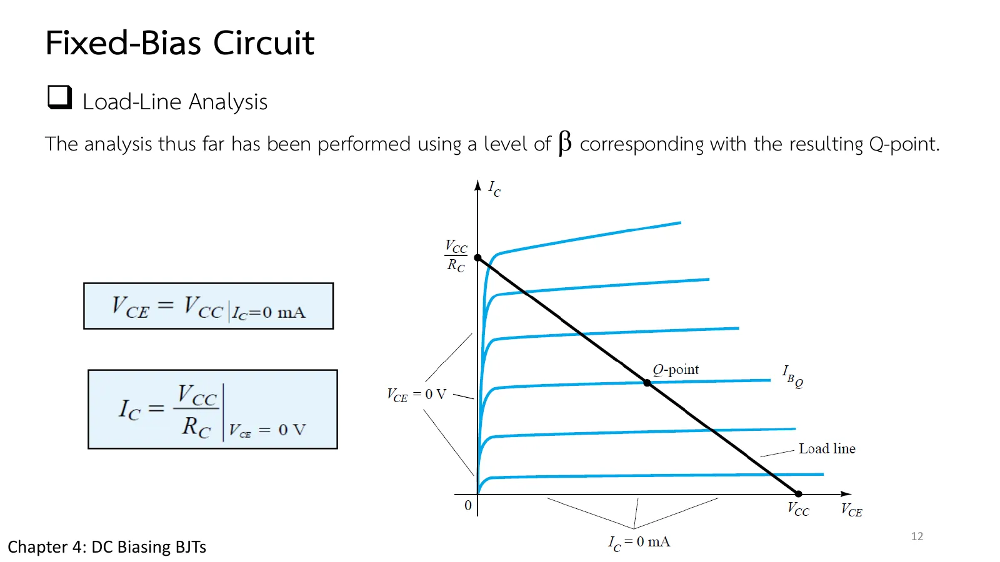
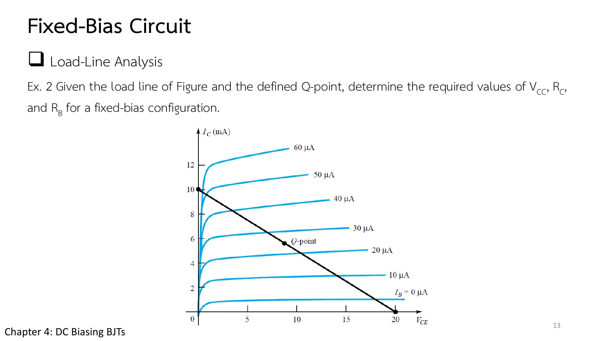

จุดทำงานและวงจรไบแอสคงที่ The operating point and fixed bias
The operating point and fixed bias \(I_B\) first, then \(I_C = \beta I_B\) and \(V_{CE}\)
เปิดเครื่องขยายเสียงทิ้งไว้โดยยังไม่เสียบไมโครโฟน ทรานซิสเตอร์ข้างในก็มีกระแสไหลอยู่แล้ว นั่นคือการตั้งท่ารอ: ไฟตรงจัดให้ทรานซิสเตอร์ยืนอยู่ที่จุดทำงาน หรือจุด Q (quiescent point แปลว่าจุดสงบนิ่ง) กลางย่านแอกทีฟ พอสัญญาณมาถึงก็แกว่งรอบจุดนี้ได้ทั้งขึ้นและลง การตั้งจุดนี้เรียกว่าการไบแอส (biasing) หน้านี้เริ่มจากวิธีที่ง่ายที่สุด คือวงจรไบแอสคงที่ (fixed bias) ที่ใช้ตัวต้านทานเพียงสองตัว: เลื่อนค่าแล้วดูจุด Q วิ่งบนเส้นโหลด (ส่วน A) แก้ Ex.1 กับกระแสอิ่มตัว ย้อนหาวงจรจากเส้นโหลดใน Ex.2 แล้วดูว่าเกิดอะไรขึ้นเมื่อ β เพิ่มเป็นสองเท่า (สไลด์บทที่ 4 หน้า 3–13 · Boylestad หัวข้อ 4.1–4.3)
Switch on an amplifier with no microphone plugged in, and current already flows through its transistors. They are getting ready: dc parks each transistor at an operating point, the Q-point (Q for quiescent, the quiet state), in the middle of the active region, so that a signal arriving later can swing around it both up and down. Setting this point is called biasing. This page starts with the simplest way to do it, the fixed-bias circuit with just two resistors: move them and watch Q run along the load line (section A), solve Ex.1 and its saturation current, work back from a load line to the circuit in Ex.2, and see what happens when β doubles (chapter 4 slides, pp. 3–13; Boylestad sections 4.1–4.3).
ประเด็นสำคัญของหน้านี้
- ไฟตรงกับไฟสลับแยกกันได้ (ทฤษฎีการซ้อนทับ): ตัวเก็บประจุเป็นเปิดวงจรสำหรับไฟตรง วิเคราะห์ไฟตรงจึงถอดตัวเก็บประจุออก และกำลังที่ขยายได้มาจากแหล่งจ่ายไฟตรง ไม่ใช่จากทรานซิสเตอร์ (Boylestad หัวข้อ 4.1 ส่วนสไลด์หน้า 3 บอกเพียงว่าการวิเคราะห์ต้องรู้ทั้งผลตอบสนองไฟตรงและไฟสลับ)
- จุด Q: เลือกให้อยู่กลางย่านแอกทีฟ (จุด B ในรูป 4.1) สัญญาณจึงแกว่งได้ทั้งสองทางโดยไม่ชนคัตออฟหรืออิ่มตัว และไม่เกิน \(I_{C\max}\), \(V_{CE\max}\), \(P_{C\max}\) (สไลด์หน้า 4–5)
- ไบแอสคงที่: แยก \(V_{CC}\) เป็นสองแหล่งจ่าย (เพื่อวิเคราะห์) วงเบสให้ \(I_B = (V_{CC} - V_{BE})/R_B\) วงคอลเล็กเตอร์ให้ \(V_{CE} = V_{CC} - I_CR_C\) โดย \(I_C\) ไม่ขึ้นกับ \(R_C\) (สไลด์หน้า 6–8)
- การอิ่มตัว: ลัดวงจร C–E แล้วหากระแส \(I_{C\text{sat}} = V_{CC}/R_C\) คือกระแสสูงสุดของวงจรนั้น ต้องอยู่ต่ำกว่านี้พอสมควรจึงขยายได้เป็นเชิงเส้น (สไลด์หน้า 10)
- เส้นโหลด: สมการวง \(V_{CE} = V_{CC} - I_CR_C\) เป็นเส้นตรงจาก \((V_{CC}, 0)\) ถึง \((0, V_{CC}/R_C)\) บนลักษณะสมบัติ จุด Q คือจุดตัดกับเส้น \(I_B\) ของวงจร \(R_B\) เลื่อน Q ไปตามเส้น \(R_C\) และ \(V_{CC}\) เปลี่ยนตัวเส้นเอง (สไลด์หน้า 11–12)
- จุดอ่อน: \(I_C = \beta I_B\) ตรง ๆ เมื่อ β เปลี่ยน (อุณหภูมิ หรือทรานซิสเตอร์คนละตัว) จุด Q เปลี่ยนเท่า ๆ กัน (Example 4.5)
Key points of this page
- DC and ac separate (superposition): capacitors are open for dc, so the dc analysis leaves them out; and any amplified power comes from the dc supply, not from the transistor (Boylestad section 4.1; slide p. 3 says only that both the dc and the ac response must be known).
- The Q-point: pick it mid-way in the active region (point B of Fig. 4.1) so the signal can swing both ways without hitting cutoff or saturation, and within \(I_{C\max}\), \(V_{CE\max}\), \(P_{C\max}\) (slides pp. 4–5).
- Fixed bias: split \(V_{CC}\) into two supplies (for analysis); the base loop gives \(I_B = (V_{CC} - V_{BE})/R_B\), the collector loop \(V_{CE} = V_{CC} - I_CR_C\), and \(I_C\) does not depend on \(R_C\) (slides pp. 6–8).
- Saturation: short C–E and find \(I_{C\text{sat}} = V_{CC}/R_C\), the most current that circuit can give; stay well below it for linear amplification (slide p. 10).
- The load line: the loop equation \(V_{CE} = V_{CC} - I_CR_C\) is a straight line from \((V_{CC}, 0)\) to \((0, V_{CC}/R_C)\) on the characteristics; Q is where it meets the circuit's \(I_B\) curve. \(R_B\) moves Q along the line, \(R_C\) and \(V_{CC}\) move the line itself (slides pp. 11–12).
- The weakness: \(I_C = \beta I_B\) directly, so when β changes (temperature, another device) Q changes by the same factor (Example 4.5).
จุด Q: กลางย่านแอกทีฟ ห่างจากทุกขอบ
The Q-point: mid-way in the active region, clear of every edge
สไลด์หน้า 3 วางกติกาของทั้งบทไว้ตั้งแต่ต้น: หา \(I_B\) ก่อน แล้วสามสมการ \(V_{BE} = 0.7\) V, \(I_C = \beta I_B\) และ \(I_E = (\beta + 1)I_B \cong I_C\) จะให้ค่าที่เหลือทั้งหมด ผลลัพธ์ไฟตรงที่ได้คือจุด Q บนลักษณะสมบัติ (สไลด์หน้า 4) ในรูป 4.1 จุด B กลางย่านแอกทีฟดีที่สุด เพราะสัญญาณแกว่งรอบจุดนี้ได้ทั้งขึ้นและลงโดยไม่ชนคัตออฟหรือการอิ่มตัว และไม่เกิน \(I_{C\max}\) = 25 mA, \(V_{CE\max}\) = 20 V หรือเส้นโค้ง \(P_{C\max}\)
ย่านแอกทีฟมีเงื่อนไขสองข้อ (สไลด์หน้า 5): รอยต่อเบส–อิมิตเตอร์ไบแอสตรงที่ราว 0.6–0.7 V และรอยต่อเบส–คอลเล็กเตอร์ไบแอสกลับ ถ้ารอยต่อเบส–อิมิตเตอร์ไบแอสกลับ ทรานซิสเตอร์คัตออฟ ถ้าไบแอสตรงทั้งสองรอยต่อ ทรานซิสเตอร์อิ่มตัว ทุกวงจรในบทนี้จึงมีงานเดียวกัน: จัดแรงดันให้สองรอยต่ออยู่ในสภาพที่ถูกต้อง
Slide p. 3 lays down the rule for the whole chapter: find \(I_B\) first, and the three equations \(V_{BE} = 0.7\) V, \(I_C = \beta I_B\) and \(I_E = (\beta + 1)I_B \cong I_C\) give everything else. The dc result is a Q-point on the characteristics (slide p. 4). In Fig. 4.1 point B, mid-way in the active region, is the best: a signal can swing around it up and down without hitting cutoff or saturation, and without exceeding \(I_{C\max}\) = 25 mA, \(V_{CE\max}\) = 20 V or the \(P_{C\max}\) curve.
The active region has two conditions (slide p. 5): the base–emitter junction forward-biased at about 0.6–0.7 V, and the base–collector junction reverse-biased. With the base–emitter junction reverse-biased the transistor is cut off; with both junctions forward-biased it saturates. Every circuit of this chapter has the same job: put the two junctions in the right state.

![Chapter 4 slide 4, Operating Point: for transistor amplifiers the resulting dc current and voltage establish an operating point on the characteristics that define the region that will be employed for amplification of the applied signal; it is also called the quiescent point (abbreviated Q-point); the biasing circuit can be designed to set the device operation at any of these points or others within the active region. Figure 4.1: collector characteristics with I_Cmax = 25 mA, V_CEmax = 20 V, the P_Cmax curve, points A (origin), B (mid), C (near saturation) and D (near the limits).](slides/ch4/p04.webp)

แหล่งจ่ายเดียว แยกเป็นสองวง
One supply, split into two loops
วงจรไบแอสคงที่ในสไลด์หน้า 6 มีตัวเก็บประจุ \(C_1\), \(C_2\) ไว้รับและส่งสัญญาณไฟสลับ แต่สำหรับไฟตรง ตัวเก็บประจุเป็นเปิดวงจร จึงถอดออกได้ เหลือ \(R_B\), \(R_C\) กับ \(V_{CC}\) ซึ่งวาดแยกเป็นสองแหล่ง (เพื่อการวิเคราะห์เท่านั้น) วงจรจึงแตกเป็นด้านเข้ากับด้านออกที่แก้ทีละวงได้
วงเบส–อิมิตเตอร์ (สไลด์หน้า 7) ให้ \(I_B = (V_{CC} - V_{BE})/R_B\): \(V_{CC}\) กับ \(V_{BE}\) คงที่ \(R_B\) จึงเป็นตัวเลือกกระแสเบส วงคอลเล็กเตอร์–อิมิตเตอร์ (สไลด์หน้า 8) รับ \(I_C = \beta I_B\) มาแล้วให้ \(V_{CE} = V_{CC} - I_CR_C\) สังเกตว่าตราบที่ยังอยู่ในย่านแอกทีฟ \(R_C\) ไม่ได้กำหนด \(I_C\) เลย มันกำหนดแค่ \(V_{CE}\)
The fixed-bias circuit of slide p. 6 has capacitors \(C_1\), \(C_2\) to take the ac signal in and out, but for dc a capacitor is an open circuit, so they come out. What is left is \(R_B\), \(R_C\) and \(V_{CC}\), drawn as two separate supplies (for analysis only), and the circuit falls apart into an input side and an output side that can be solved one loop at a time.
The base–emitter loop (slide p. 7) gives \(I_B = (V_{CC} - V_{BE})/R_B\): \(V_{CC}\) and \(V_{BE}\) are fixed, so \(R_B\) chooses the base current. The collector–emitter loop (slide p. 8) takes \(I_C = \beta I_B\) and gives \(V_{CE} = V_{CC} - I_CR_C\). Notice that as long as the transistor stays active, \(R_C\) has no say in \(I_C\) at all; it only sets \(V_{CE}\).



↓ ส่วน A: เลื่อน \(R_B\) แล้วเลื่อน \(R_C\) ดูว่าตัวไหนขยับกระแส ตัวไหนขยับแรงดัน
↓ Section A: move \(R_B\), then \(R_C\), and see which one moves the current and which one the voltage
วงจรไบแอสคงที่บนเส้นโหลด
A fixed-bias circuit on its load line
สไลด์หน้า 11 นำสมการของวงคอลเล็กเตอร์มาวางคู่กับลักษณะสมบัติ แล้วหาสองจุดปลาย: \(V_{CE} = V_{CC}\) เมื่อ \(I_C\) = 0 และ \(I_C = V_{CC}/R_C\) เมื่อ \(V_{CE}\) = 0 ลากเส้นตรงเชื่อมสองจุดนี้ก็ได้เส้นโหลด จุด Q ของวงจรต้องอยู่บนเส้นนี้เสมอ ส่วน \(R_B\) เป็นตัวเลือกว่าจะอยู่ตรงไหนของเส้น
Slide p. 11 sets the collector-loop equation beside the characteristics and finds two end points, \(V_{CE} = V_{CC}\) at \(I_C\) = 0 and \(I_C = V_{CC}/R_C\) at \(V_{CE}\) = 0. Join them with a straight line and you have the load line. The Q-point must lie on it, and \(R_B\) picks where.

เลื่อน \(R_B\) แล้วดูจุด Q วิ่งไปตามเส้นโหลด (ยิ่ง \(R_B\) น้อย \(I_B\) ยิ่งมาก จนอิ่มตัว) เลื่อน \(R_C\) หรือ \(V_{CC}\) แล้วดูตัวเส้นโหลดเปลี่ยน (สไลด์หน้า 12 · Boylestad รูป 4.13–4.15) ส่วนกราฟล่างคือ \(I_C\) เทียบกับ β ของวงจรขณะนั้น: เส้นตรงผ่านจุดกำเนิดจนชนเพดาน \(I_{C\text{sat}}\) เพราะ \(I_B\) ไม่ขึ้นกับ β เลย
Move \(R_B\) and watch Q run along the load line (the smaller \(R_B\), the larger \(I_B\), up to saturation). Move \(R_C\) or \(V_{CC}\) and the load line itself changes (slide p. 12; Boylestad Figs. 4.13–4.15). The lower graph is \(I_C\) against β for the present circuit: a straight line through the origin until it hits the \(I_{C\text{sat}}\) ceiling, because \(I_B\) does not depend on β at all.
Ex.1: วงจรไบแอสคงที่ และการอิ่มตัว
Ex.1: a fixed-bias circuit, and its saturation
สไลด์หน้า 9 ให้ตัวเลขจริง: 12 V, 240 kΩ, 2.2 kΩ และ β = 50 ส่วนสไลด์หน้า 10 ตอบอีกคำถามหนึ่ง: วงจรนี้ให้กระแสคอลเล็กเตอร์ได้มากที่สุดเท่าใด ให้ลัดวงจรคอลเล็กเตอร์กับอิมิตเตอร์ แล้วหา \(I_{C\text{sat}} = V_{CC}/R_C\) ก่อนเปิดเฉลย ลองเดาว่า \(I_{CQ}\) จะเป็นสัดส่วนเท่าใดของค่านี้
Slide p. 9 brings real numbers: 12 V, 240 kΩ, 2.2 kΩ and β = 50. Slide p. 10 answers one more question: what is the most collector current this circuit can give? Short the collector to the emitter and find \(I_{C\text{sat}} = V_{CC}/R_C\). Before opening the solution, guess what fraction of it \(I_{CQ}\) will be.


วงจรไบแอสคงที่ \(V_{CC}\) = 12 V, \(R_B\) = 240 kΩ, \(R_C\) = 2.2 kΩ, β = 50 จงหา (a) \(I_{BQ}\) และ \(I_{CQ}\) (b) \(V_{CEQ}\) (c) \(V_B\) และ \(V_C\) (d) \(V_{BC}\) แล้วหากระแสอิ่มตัวของวงจร
A fixed-bias circuit with \(V_{CC}\) = 12 V, \(R_B\) = 240 kΩ, \(R_C\) = 2.2 kΩ, β = 50. Determine (a) \(I_{BQ}\) and \(I_{CQ}\), (b) \(V_{CEQ}\), (c) \(V_B\) and \(V_C\), (d) \(V_{BC}\); then the saturation current of the circuit.
ภาพจำลองคือวงจรของโจทย์ (ตัวเก็บประจุถอดออกแล้ว) แผงข้างภาพแสดงเส้นโหลดกับจุด Q และสลับเป็นแรงดันของโหนดในขั้นที่ 3–4 ลองตอบก่อน
The simulation is the problem's circuit (capacitors left out). The side panel shows the load line with Q, and switches to the node voltages in steps 3–4. Try it first.
จากเส้นตรงหนึ่งเส้น กลับไปหาวงจร
From one straight line back to the circuit
รูป 4.12 ในสไลด์หน้า 12 รวมวงจรไบแอสคงที่ไว้ในภาพเดียว: เส้นโหลดตัดแกนตั้งที่ \(V_{CC}/R_C\) ตัดแกนนอนที่ \(V_{CC}\) และจุด Q อยู่ตรงที่เส้นนี้ตัดเส้น \(I_{BQ}\) ถ้าวงจรบอกเส้นโหลดได้ เส้นโหลดก็บอกวงจรกลับได้เช่นกัน
Ex.2 (สไลด์หน้า 13) ให้มาแค่รูป 4.16: เส้นโหลดจาก 10 mA ถึง 20 V กับจุด Q บนเส้น 25 µA ก่อนเปิดเฉลย ลองอ่านเอง: จุดตัดแกนนอนบอกค่าใด จุดตัดแกนตั้งบอกตัวต้านทานตัวไหน และเส้น \(I_B\) ของจุด Q บอกอะไร
Fig. 4.12 on slide p. 12 puts the whole fixed-bias circuit into one picture: the load line meets the vertical axis at \(V_{CC}/R_C\) and the horizontal axis at \(V_{CC}\), and Q sits where it crosses the \(I_{BQ}\) curve. If the circuit gives the load line, the load line can give back the circuit.
Ex.2 (slide p. 13) gives nothing but Fig. 4.16: a load line from 10 mA to 20 V and a Q-point on the 25 µA curve. Before opening the solution, read it yourself: which value does the horizontal intercept give, which resistor does the vertical intercept give, and what does the \(I_B\) curve of Q tell you?


↓ โจทย์ 2: หา \(V_{CC}\), \(R_C\) และ \(R_B\) แล้วดูว่าวงจรที่สร้างจากคำตอบตกลงบนจุด Q ที่กำหนดหรือไม่
↓ Problem 2: find \(V_{CC}\), \(R_C\) and \(R_B\), then see whether the circuit built from them lands on the given Q
Ex.2: ย้อนหาวงจรจากเส้นโหลด
Ex.2: the circuit from its load line
เส้นโหลดในรูป 4.16 ลากจาก 10 mA บนแกน \(I_C\) ถึง 20 V บนแกน \(V_{CE}\) และจุด Q อยู่บนเส้น \(I_B\) = 25 µA จงหา \(V_{CC}\), \(R_C\) และ \(R_B\) ของวงจรไบแอสคงที่
The load line of Fig. 4.16 runs from 10 mA on the \(I_C\) axis to 20 V on the \(V_{CE}\) axis, and Q lies on the \(I_B\) = 25 µA curve. Determine \(V_{CC}\), \(R_C\) and \(R_B\) of the fixed-bias circuit.
ภาพจำลองสร้างวงจรขึ้นจากคำตอบ (ทรานซิสเตอร์ β = 200 ตามระยะห่างของเส้นในรูป) เมื่อเปิดครบทุกขั้น จุด Q ของวงจรต้องตรงกับจุด Q ในรูป ลองตอบก่อน
The simulation builds the circuit from the answers (a β = 200 transistor, from the spacing of the curves in the figure); with every step open, the circuit's Q must land on the figure's Q. Try it first.
เมื่อ β เพิ่มเป็นสองเท่า
When β doubles
วงจรของ Ex.1 แต่ทรานซิสเตอร์มี β = 100 แทน 50 จงหา \(I_B\), \(I_C\) และ \(V_{CE}\) แล้วเทียบการเปลี่ยนแปลง
The circuit of Ex.1 with a β = 100 transistor instead of 50. Find \(I_B\), \(I_C\) and \(V_{CE}\), and compare the changes.
ภาพจำลองเปลี่ยนทรานซิสเตอร์เมื่อเปิดเฉลย จุด Q เดิม (β = 50) ยังวาดไว้ให้เทียบ ลองตอบก่อน
The simulation swaps the transistor when the solution opens; the old Q (β = 50) stays drawn for comparison. Try it first.
ฝึกเพิ่ม
More practice
ลองทำดู 1 — จุด Q บนเส้นโหลด
- ส่วน A ตั้ง \(V_{CC}\) = 12 V, \(R_C\) = 2.2 kΩ, β = 50 แล้วเลื่อน \(R_B\) จาก 1 MΩ ลงมา: \(I_B\) เพิ่ม จุด Q ไต่ขึ้นตามเส้นโหลด ที่ราว 100 kΩ ถึง \(I_{C\text{sat}}\) = 5.45 mA แล้วหยุด (ย่านอิ่มตัว \(V_{CE}\) ≈ 0)
- คง \(R_B\) = 240 kΩ แล้วเลื่อน \(R_C\): \(I_C\) ไม่เปลี่ยนเลย (2.35 mA) แต่เส้นโหลดเอียงและ \(V_{CE}\) เปลี่ยน จน \(R_C\) ราว 4.8 kΩ ขึ้นไปวงจรอิ่มตัว
- ลด \(V_{CC}\): เส้นโหลดเลื่อนขนานเข้าหาจุดกำเนิด (รูป 4.15)
ลองทำดู 2 — ความไวต่อ β
- กราฟล่างของส่วน A: \(I_C\) เป็นเส้นตรงกับ β จนชนเพดาน \(I_{C\text{sat}}\) ลองเลื่อน β จาก 50 ไป 100 แล้วดูจุด Q กระโดด นี่คือเหตุที่หน้า 4.2–4.4 เพิ่มตัวต้านทานเพื่อ "ป้อนกลับ"
- ข้อ 2: ถ้าเลือก \(R_B\) = 820 kΩ (ค่ามาตรฐานใกล้ 772 kΩ) \(I_B\) จะเป็น 23.5 µA และ \(I_C\) = 4.7 mA ห่างเป้าหมาย 6 %
Try this 1 — Q on the load line
- In section A set \(V_{CC}\) = 12 V, \(R_C\) = 2.2 kΩ, β = 50 and move \(R_B\) down from 1 MΩ: \(I_B\) rises and Q climbs the load line; at about 100 kΩ it reaches \(I_{C\text{sat}}\) = 5.45 mA and stops (saturation, \(V_{CE}\) ≈ 0).
- Hold \(R_B\) = 240 kΩ and move \(R_C\): \(I_C\) does not change at all (2.35 mA), but the load line tilts and \(V_{CE}\) changes, until from about 4.8 kΩ the circuit saturates.
- Lower \(V_{CC}\): the load line shifts parallel toward the origin (Fig. 4.15).
Try this 2 — sensitivity to β
- The lower graph of section A: \(I_C\) is a straight line in β until the \(I_{C\text{sat}}\) ceiling. Slide β from 50 to 100 and watch Q jump. This is why pages 4.2–4.4 add resistors that feed back.
- Problem 2: with \(R_B\) = 820 kΩ (the standard value near 772 kΩ) \(I_B\) would be 23.5 µA and \(I_C\) = 4.7 mA, 6 % off the target.